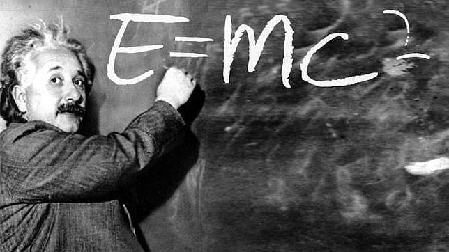
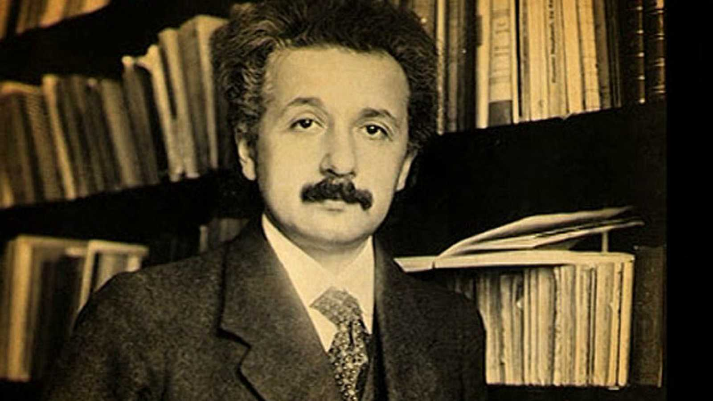
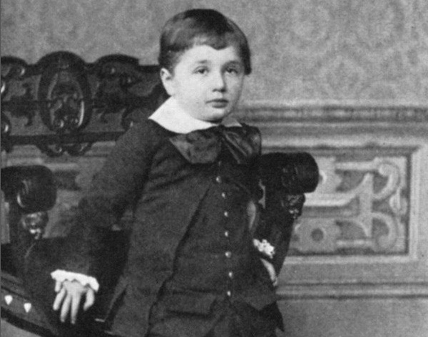

Albert Einstein fue un físico, nacido en Ulm, Alemania, el 14 de marzo de 1879. Albert Einstein, autor de la teoría de la relatividad, pasó a la historia como un genio, y un símbolo de la revolución científica del siglo XX.
¿Qué aporto Albert Einstein?

es generalmente así, Einstein se convirtió en símbolo del desarrollo intelectual, aunque no muchas personas sepan en realidad cuáles fueron sus aportes a la ciencia. Albert Einstein logró, por ejemplo, probar la existencia de los átomos; explicar la rotación de los planetas alrededor del sol; mostrar las partículas que descomponen la luz; demostrar que el tiempo y el espacio son relativos y plantear que el universo se encuentra en constante expansión.
Un mal estudiante

El pequeño Albert fue un niño quieto y ensimismado, y tuvo un desarrollo intelectual lento. El propio Einstein atribuyó a esa lentitud el hecho de haber sido la única persona que elaborase una teoría como la de la relatividad: «un adulto normal no se inquieta por los problemas que plantean el espacio y el tiempo, pues considera que todo lo que hay que saber al respecto lo conoce ya desde su primera infancia. Yo, por el contrario, he tenido un desarrollo tan lento que no he empezado a plantearme preguntas sobre el espacio y el tiempo hasta que he sido mayor».